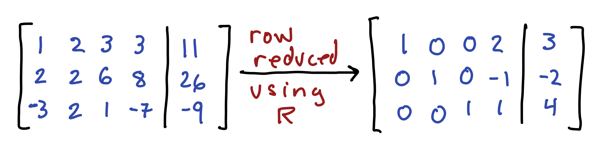

Section 2 Problem Set 2
- Due: Tuesday June 1 by 11:59PM CST.
- Upload your solutions to Moodle in a PDF.
- Please feel free to use RStudio for all row reductions.
- In problems where you use RStudio for row reduction and are not asked to turn in an R markdown file, you can write something like this:

## Loading required package: pracmaThe Problem Set covers sections 1.3, 1.4, 1.5, and 1.7.
2.1 Parametric Vector Form
Here is the augmented matrix for a system of linear equations \(\mathsf{A} \mathsf{x} = \mathsf{b}\), and its RREF. Give the general solution to this system in parametric vector form and describe the geometry of the solution. For example, you answer should be something like: “it is a plane in \(\mathbb{R}^3\)” or “it is a line in \(\mathbb{R}^7\)” or “it is a point in \(\mathbb{R}^4\).” \[ \left[ \begin{array}{ccccc|c} 1 & 1 & -1 & -1 & 2 & 1 \\ 1 & 0 & -2 & 1 & 1 & 3 \\ -2 & 1 & 5 & 1 & -6 & 2 \\ -3 & 0 & 6 & 2 & -8 & 1 \\ 0 & 1 & 1 & 2 & -3 & 6 \\ 1 & 0 & -2 & -1 & 3 & -1 \\ \end{array} \right] \longrightarrow \left[ \begin{array}{ccccc|c} 1 & 0 & -2 & 0 & 2 & 1 \\ 0 & 1 & 1 & 0 & -1 & 2 \\ 0 & 0 & 0 & 1 & -1 & 2 \\ 0 & 0 & 0 & 0 & 0 & 0 \\ 0 & 0 & 0 & 0 & 0 & 0 \\ 0 & 0 & 0 & 0 & 0 & 0 \\ \end{array} \right] \]
2.2 RREF for a linear system
Here is the reduced row echelon form of a matrix \(\mathsf{A}\) (you are not given the matrix \(\mathsf{A}\)). \[ \mathsf{A} \longrightarrow \left[ \begin{array}{cccc} 1 & -2 & 0 & 4 \\ 0 & 0 & 1 & -5 \\ 0 & 0 & 0 & 0 \\ \end{array} \right] \]
Give the solution to the homogeneous matrix equation \(A x = \mathbf{0}\) in parametric vector form and describe the geometry of the solution. For example, you answer should be something like: “it is a plane in \(\mathbb{R}^3\)” or “it is a line in \(\mathbb{R}^7\)” or “it is a point in \(\mathbb{R}^4\).”
Suppose that we also know that \(\mathsf{A}\begin{bmatrix} 4 \\ 1 \\ -3 \\ 2 \\ \end{bmatrix} = \begin{bmatrix} 22 \\ -13 \\ 7 \\ \end{bmatrix}\). Then give the general solution to \(\mathsf{A} \mathsf{x}= \begin{bmatrix} 22 \\ -13\\ 7 \\ \end{bmatrix}\) in parametric form.
2.3 RREF for a set of vectors
Suppose that we have five vectors \(\mathsf{v}_1, \mathsf{v}_2,\mathsf{v}_3,\mathsf{v}_4,\mathsf{v}_5\) in \(\mathbb{R}^4\) and that the matrix \(A\) containing those vectors row reduces as follows \[ A = \left[ \begin{array}{ccc} \mid & \mid & \mid & \mid & \mid \\ \mathsf{v}_1 & \mathsf{v}_2 & \mathsf{v}_3 &\mathsf{v}_4 &\mathsf{v}_5 \\ \mid & \mid & \mid & \mid & \mid \end{array} \right] \longrightarrow \begin{bmatrix} 1 & 0 & -3 & 0 & 2 \\ 0 & 1 & 4 & 0 & 1 \\ 0 & 0 & 0 & 1 & 1 \\ 0 & 0 & 0 & 0 & 0 \end{bmatrix}. \]
Do the vectors \(\mathsf{v}_1, \mathsf{v}_2, \mathsf{v}_3, \mathsf{v}_4, \mathsf{v}_5\) span \(\mathbb{R}^4\)? Justify your answer.
Give the solution, in parametric form, to the homogeneous system of equations \(A x = 0\) for this problem.
Give a dependence relation among the vectors \(\mathsf{v_1}, \mathsf{v_2},\mathsf{v_3},\mathsf{v_4}, \mathsf{v_5}\).
Is the vector \(\mathsf{v}_3\) in \(\mathrm{span}(\mathsf{v}_1,\mathsf{v}_2)\)? Justify your answer.
Suppose that \(\mathsf{b} = 5 \mathsf{v}_1 + \mathsf{v}_2 - 3 \mathsf{v}_3 +4 \mathsf{v}_4 - \mathsf{v}_5\). Use what you have done above to write \(\mathsf{b}\) as a different linear combination of \(\mathsf{v_1}, \mathsf{v_2},\mathsf{v_3},\mathsf{v_4}, \mathsf{v_5}\) (i.e., with different weights).
2.4 A square matrix
Suppose that \(A\) is a \(5\times 5\) matrix and \(\mathsf{b}\) is a vector in \(\mathbb{R}^5\) with the property that \(A\mathsf{x}=\mathsf{b}\) has a unique solution. Explain why the columns of \(A\) must span \(\mathbb{R}^5\). Use the reduced row echelon form of \(A\) in your explanation.
2.5 Combining solutions to \(A \mathsf{x} = \mathsf{b}\)
Suppose that \(\mathsf{x}_1\) and \(\mathsf{x}_2\) are solutions to \(\mathsf{A} \mathsf{x} = \mathsf{b}\) (where \(\mathsf{b} \not= \mathsf{0}\)).
- Decide if any of the following are also solutions to \(\mathsf{A} \mathsf{x} = \mathsf{b}\).
- \(\mathsf{x}_1+ \mathsf{x}_2\)
- \(\mathsf{x}_1 - \mathsf{x}_2\)
- \(\frac{1}{2} ( \mathsf{x}_1 + \mathsf{x}_2)\)
- \(\frac{5}{2} \mathsf{x}_1 - \frac{3}{2} \mathsf{x}_2\).
- Under what conditions on \(c\) and \(d\) is \(\mathsf{x} = c \mathsf{x}_1 + d \mathsf{x}_2\) a solution to \(\mathsf{A} \mathsf{x} = \mathsf{b}\)? Justify your answer.
- Let \(\mathsf{u}\) be the vector that points to \(1/3\) of the way from the tip of \(\mathsf{v}\) to the tip of \(\mathsf{w}\) as depicted below.
- Write \(\mathsf{u}\) as a linear combination of \(\mathsf{v}\) and \(\mathsf{w}\) (hint: think about \(\mathsf{w} - \mathsf{v}\))
- If \(\mathsf{v}\) and \(\mathsf{w}\) are solutions to \(A x = \mathsf{b}\) then show that \(\mathsf{u}\) is also a solution to \(A \mathsf{x} = \mathsf{b}\).

2.6 A Balanced Diet
An athlete wants to consume a daily diet of 200 grams of carbohydrates, 60 grams of fats and 160 grams of proteins. Here are some of their favorite foods.
| food | carbs | fats | proteins |
|---|---|---|---|
| almonds | 3 | 8 | 5 |
| avocado | 15 | 31 | 4 |
| beans | 20 | 1 | 8 |
| bread | 12 | 1 | 2 |
| cheese | 1 | 5 | 3 |
| chicken | 0 | 13 | 50 |
| egg | 1 | 5 | 6 |
| milk | 12 | 8 | 8 |
| zucchini | 6 | 0 | 2 |
Answer the following questions, using RStudio for your calculations. Each response must use two or more of the following terms: linear combination, span, linearly dependent, linearly independent.
Explain why they cannot achieve their daily goal by eating only almonds, milk and zucchini.
Explain why they cannot achieve their daily goal by eating only almonds, beans and cheese.
Find a valid one-day diet consisting of almonds, chicken, and zucchini.
2.7 Missing Column
The matrices below are supposed to be \(3 \times 3\) but in each case the third column was accdentally deleted. In each case, add a third column, that has no 0s in it and is different from either the first or second column, so that the columns of \(A\) are linearly dependent and so that the columns of \(B\) are linearly independent. Briefly describe your strategy. \[ A=\left[ \begin{matrix} 1& 0 & \quad \\ 0& 1& \quad \\ 2& 2& \quad \\ \end{matrix}\right] \qquad\qquad B=\left[ \begin{matrix} 1& 0 & \quad \\ 0& 1& \quad \\ 2& 2& \quad \\ \end{matrix}\right] \]
2.8 Linear System
Use R to solve this problem. Do your computations in an R markdown file. Knit the file to HTML and include it with your homework. Here you can download a template for doing this problem (including the matrix typed out for you!). \[ A =\left[ \begin{array}{cccccc} 12 & 10 & -6 & 8 & 4 & -18 \\ -7 & -6 & 4 & -5 & -7 & 16 \\ 9 & 9 & -9 & 9 & 9 & -27 \\ -4 & -3 & -1 & 0 & -8 & 9 \\ 8 & 7 & -5 & 6 & 1 & -12 \\ \end{array} \right] \quad b = \begin{bmatrix} 14 \\ -12 \\ 9\\ -15 \\6 \end{bmatrix} \]
Show that the columns of \(A\) are linearly dependent by finding two different dependency relations among them. You can write your answer in a form like \(5 a1+ 4 a2 + 3 a3 + 2 a4 + a5 = 0\), where \(a1, a2,\) etc are the columns of \(A\).
Augment \(A\) with \(b\) and show that \(A x = b\) is consistent and has infinitely many solutions.
Remove the free-variable columns from \(A\) to get a new, smaller matrix \(A'\). Show that \(A' x = b\) has a unique solution and say what that solution is.